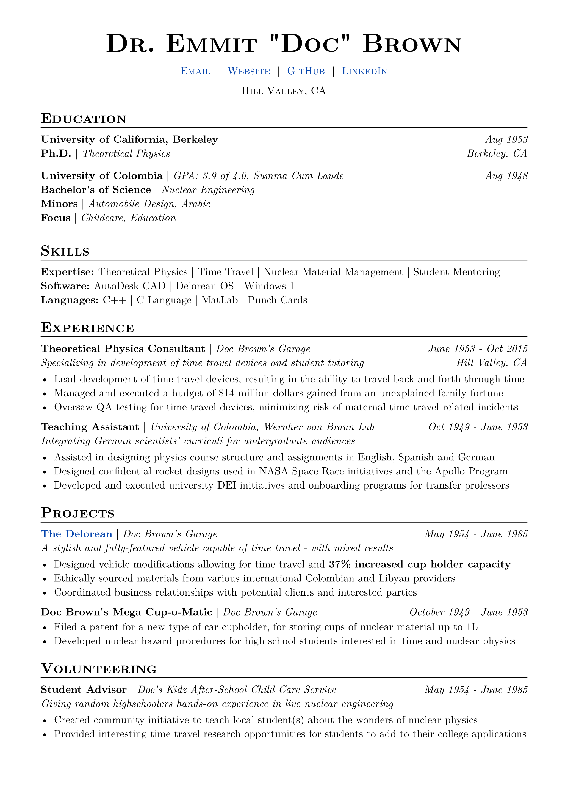
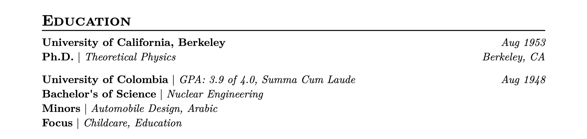
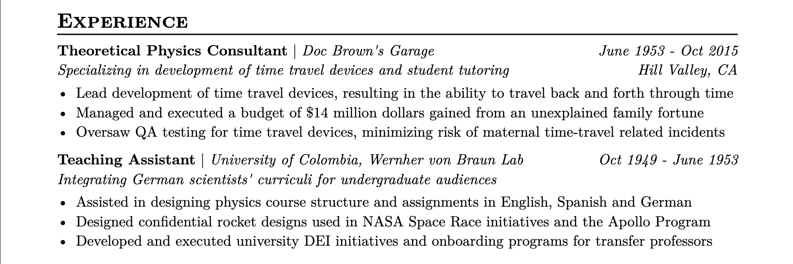
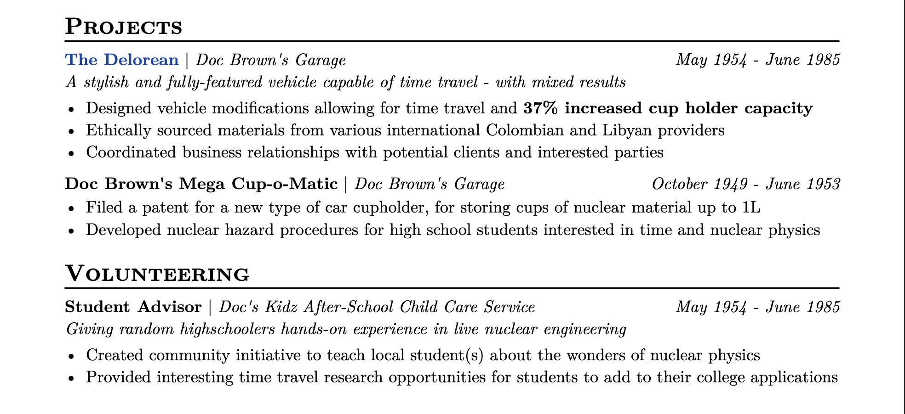

This guide is a direct copy of the Resume Template on the Typst Universe portal. This is the exact system I use for my own resume, so this system may be updated over time.
Welcome to the 2.0 version of the Super Cool Resume Template: now with 100% less LaTeX!
This is a second major iteration of the Resume Template made by Spencer Elkington, originally created for the University of Utah’s Triangle Engineering Professional Education students. It is now also used for Chaotic Good Computing professional development mentoring & consulting. You can find more resources at https://blog.chaoticgood.computer
If you have any questions, feedback, or advice, please feel free to contact me at spencer@chaoticgood.computer
If you publicly post or share the source code to your resume, you’re totally allowed (and I would encourage you) to delete all of the commented sections in the template.
Quickstart: How to use this template
- If you haven’t already, create a (free!) Typst account at https://typst.app
- Once you have an account, go to Typst Universe and select the CGC template
- Click on “Create Project in App”, give your project a title, and press “Create”
- Start editing! This copy is your own personal copy to edit however you want!
- If you would like to edit a copy of the resume without the guide, use the
resume.typfile.
- If you would like to edit a copy of the resume without the guide, use the
Opinion: Why should you use this template?
This template will handle 99.9% of your resume’s formatting for you so you don’t have to spend time massaging the formatting in an editor like Word or Google Docs, or worry that the template you’re using doesn’t mesh with the jobs you’re applying for. Having the formatting pre-baked means you can take more time to focus on your content - easily the most important part of your applications.
To be clear: the formatting here is OPINIONATED. Although the format has been refined over a period of about 4 years based on a number of meetings with recruiters, hiring managers, and employees at both small and large companies across a number of technical and professional industries, it does still represent many of my own opinions. That said, it’ll provide you with a good starting point to work off of as you slowly develop your own resume & style moving forward.
If this is your first resume, I’d recommend sticking with this formatting for now. However, if you’re either recreating a previous resume, or if you get far along enough into your career that you want to flavor it up a bit, you can find all of the templating in the resume.typ file included in this project.
Basics of Resumes
In general, resumes ought to be one page of concise, bulleted, well-formatted descriptions of things about yourself and things you’ve done that explain who you are and what you can do to somebody who’s looking to hire somebody like you.
While there are exceptions to the one-page rule (which would make it a CV, reserved for people with Ph.Ds and many publications, or those with decades in their field and significant and notable achievements), you should keep it to one page. Having more than one page on your resume will lead to one of two likely reactions:
- “This person clearly didn’t need to use two (or more) pages”, which immediately shifts the reviewer to a mindset that you’re overestimating your credentials; or
- The person reviewing your resume doesn’t even think to check how many pages there are and only sees the first one anyway
In general, if you want to include more information about yourself that would spill your resume past the first page, you should use LinkedIn as your “full” resume and continue to keep this document to just a one-page review of the most relevant things about yourself.
Along with this, there are two sections that people expect to see on resumes:
- Education (or equivalent) section (see the Education section for more details)
- Experience section (see the Experience section for more details)
Basics of Typst
Previously, this template was created in LaTeX, another PDF typesetting language. To celebrate its 40th(!) birthday, we’re killing it in favor of Typst!
Typst is a gentler PDF typesetting language that supports putting far more of the “noise” of your formatting into a separate file. That way, the only thing you really have to worry about is putting your content into this file.
To learn more about Typst, you can find the documentation here: https://typst.app/docs
Header & Contact Information
This is where you should put your name, your contact information, and your general location!
#import "util/resume.template.typ": *
#show: resume.with(
author: "Dr. Emmit \"Doc\" Brown",
location: "Hill Valley, CA",
contacts: (
[#link("mailto:sample_resume@chaoticgood.computer")[Email]],
[#link("https://chaoticgood.computer")[Website]],
[#link("https://github.com/spelkington")[GitHub]],
[#link("https://linkedin.com/in/spelkington")[LinkedIn]],
)
)Opinion: Specifying Your Location
Sometimes, people put their full mailing address on their resume. I personally believe that you should leave your location to ONLY the general metropolitan area you’re in. This is for a few reasons:
- Full mailing addresses are noisy, and wherever possible you should try to eliminate noise from your resume. Recruiters only really need to know your general location, so it’s better to just keep it short and simple.
- As a general safety rule-of-thumb, you should try to not publicly post the address of the place you sleep on the internet. ¯\(ツ)/¯
Opinion: Including Your Phone Number
Personally, I would HIGHLY advise you leave your personal phone number off of your resume. Odds are, you’ll be sending this resume to one of two types of places:
- Public areas, such as LinkedIn, Indeed, a website you own, etc.
- Private areas, such as a potential employer’s application portal or a private message
Given that this may be in public areas, posting your phone number on the resume itself may pose the risk of opening you up to unsolicited calls & harassment. As somebody who has had their number leaked and been harassed with it since then, that’s a hard genie to put back into the bottle - I strongly advise against taking that risk.
However, when you’re privately sending your resume, you’re likely to be putting your phone number into a separate application field anyway, or even sending your resume over a private channel directly. In that case, a private recipient will already have your contact information, including your phone number. This means that having your phone number here has a lot of risk and virtually no added reward.
Unless you have a good, explicit reason for doing so, don’t put your phone number on your resume.
Opinion: Use Hyperlinks!
In the year of our lord 20XX, it is vastly more likely that somebody reviewing your resume is using a digital, internet-connected device. This may vary industry-to-industry, but the chances of a person printing your resume to review it become lower and lower each year.
When somebody is viewing your resume digitally, you have the massive advantage of being able to include hyperlinks to other areas of the internet on your resume! This effectively turns the document into a landing page for other valuable resources:
- Your LinkedIn, email, GitHub, website, etc.
- The sites of companies that you’ve worked for to provide additional context about where you worked
- Elaborate or “follow up” projects you’ve done and skills you’ve had with real-world proof that you’ve posted on the internet
On the other hand, there is a risk that somebody out there is still printing stacks of resumes to review. Additionally, you may have to print off your resume from time to time - something that can come of often if you’re, for example, a student attending your university’s job fairs. In that case, you may need to tune your hyperlinks to still be usable on printed paper.
IF YOU’RE WORRIED YOUR RESUME WILL BE PRINTED, MODIFY THE TEXT OF THE HYPERLINK TO BE THE SAME AS THE LINK ITSELF.
Education
This is where formal education goes! While this is usually university education, it doesn’t have to be. You can also include:
- Certification Programs
- Boot Camps
- Associates/college degrees
= Education
#edu(
institution: "University of California, Berkeley",
date: "Aug 1953",
location: "Berkeley, CA",
degrees: (
("Ph.D.", "Theoretical Physics"),
),
)
#edu(
institution: "University of Colombia",
date: "Aug 1948",
gpa: "3.9 of 4.0, Summa Cum Laude",
degrees: (
("Bachelor's of Science", "Nuclear Engineering"),
("Minors", "Automobile Design, Arabic"),
("Focus", "Childcare, Education")
),
)
If what you put here is not “education” in the normal sense and fits more with the subjects above, you may want to consider renaming it. However, the general advice I’ve received from technical recruiters, technical interviewers, and fellow professionals over the years is that an Education section containing university degrees should usually stay at the top of your resume.
TIP FOR UNIVERSITY STUDENTS: Companies will use this information to background check to confirm you have the degree you claim to have. Because this is one of the background check entries that HAS to check out, DO NOT MODIFY THE TYPE, NAME, OR GRADUATION DATE OF YOUR DEGREES, MINORS, OR EMPHASES.
Believe me — as somebody who has a degree in “Quantitative Analysis of Markets and Organizations,” I sure do wish I could abbreviate that down to “Quantitative Economics” for the sake of space and not having to explain what the hell that means. However — because that is the God-given name of my degree, that HAS to stay EXACTLY consistent in order to comply properly with background checks.
However, as a sneaky way around that requirement, you can add additional information here in an unofficial way. For example, “Focus” is not typically a University-registered piece of information, and something you have a bit of wiggle room on. For example, if you studied Computer Science and your coursework mainly focused on front-end development, but you didn’t get a formal emphasis in “Frontend Development”, you could do:
degrees: (
("Bachelor's of Science", "Computer Science"),
("Focus", "Frontend Development")
)Degree paths on the university level can vary from very broad to very specific - especially on a graduate level. This additional degree entree field trick is a good way to sneak additional context into your education section in a way that won’t hit snags during a background check.
Opinion: Including Your GPA
GPA is a testy subject. Some of us have great GPAs, some of us have alright GPAs, and some of us had an off year (or two, if you were in college during COVID) and if you ask us about it, we’ll avoid the subject entirely. Additionally, some companies require a GPA, others would prefer you have it, and some (the cool ones) don’t give a hoot what your GPA is. Here is the general rule-of-thumb for when to (or to not) include your GPA:
- DEFINITELY include your GPA IF:
- it is above a ~3.5/4.0 (which is usually the threshold of Deans List or your university’s equivalent); OR
- you know for a fact that the company you’re applying for requires it.
- POSSIBLY include your GPA IF:
- your GPA is between a 3.0 and 3.5, and you feel it would help your applications.
- PROBABLY don’t include your GPA IF: It’s below a 3.0.
If you do want to include your GPA, the #edu section will automatically format it for you if you add a gpa value to your entry.
You can also use the gpa: field to elaborate on extra tags like “Dean’s List”, “Honors”, “(Summa) Cum Laude”, etc.
Opinion: Including a Graduation Date
If you’re currently in an education program, you should put the estimated month and year you believe you’ll be finishing your program. You have two ways you can do this:
- Set the
datefield to some variant of “Estimated MONTH 20XX” - Just put the month and year in the future that you intend to graduate.
Prior to graduating, I opted to go with option 2 and never ran into issues. In general, people and Applicant Tracking Systems (ATS) are smart enough to intuit that a graduation date in the future means that you’re still a student.
Skills
The Skills section is where you can give an overarching view of what you’re good at and what you know! This section is broken out into categories. In general, here are some breakouts that I’ve used in the past:
- Expertise/Key Skills: Subjects, fields, and “soft” skills that you’re knowledgeable in. KEEP THIS ONE.
- Software: specific pieces of software relevant to your industry that you’re comfortable using
- Languages: Usually this means “programming languages,” but I’ve seen the polyglots among us use a Languages section for written/spoken languages as well
- Certifications: If you feel like certifications you have don’t fit into your Education section well, or you don’t want to spend as much vertical space listing them, you can place them here instead
Opinion: What Should You Put Here?
So, one thing you have to understand is that human reviewers are not the only audience for your resume. When you’re applying to for jobs and not personally handing off your resume to another human being, you should assume that your resume is going to be reviewed by an Applicant Tracking System (ATS) before it ever even sees human eyes.
ATS are bots used to pre-review resumes. In general, these bots are doing a comparison analysis of your resume against the description of the job you’re applying for. One of the primary things it does is a keyword analysis, where it is more-or-less asking the question:
How many keywords in this resume match keywords in the job description?
THIS SECTION IS THE PLACE TO MATCH THOSE KEYWORDS.
This section will be the part of your resume that changes the most. Ideally, you’ll be fine-tuning this section for each application you do to best fit your resume against the description of the job you’re applying for.
This is where “commenting out” comes in handy. In Typst, you can add // (or Ctrl+/, if you’re using the Typst editor) before any text to remove the text from your final resume WITHOUT removing it from this file. This makes it very easy to make new versions of your resume without actually permanently deleting it.
In general, the workflow I advise for creating this section is an “everything in the kitchen sink” approach:
- Put in ALL of your skills and interests, all the languages you comfortably know, all the software you know how to use, etc., into each category.
- Order each section by how comfortable or skilled you are with what you’ve listed. For example, if you put “Python” and “JavaScript” into the Languages section and are more comfortable with Python, put that first in the list.
- Comment out the entire list.
- Take the job description of a job you’d like to apply for and put it into a keyword analysis service like JobScan (https://jobscan.io) or ChatGPT to get all the job’s keywords out of the description.
- Uncomment (remove the
//) of things in each section that match the job description until the category is a line long OR you hit the end of your list - (Optional) If you noticed keywords in the job description that you would be comfortable adding, add them to the list.
Opinion: Including Programming Languages
If a technical interviewer sees a programming language on your resume, they will assume it’s fair game for a technical interview.
Now - how does this mesh with the advice above to add things in the job description to your resume? Here’s the rule of thumb for whether or not to include a language on your resume:
You should include a programming language IF:
- You are already comfortable enough with that language to do a technical interview using that language; OR
- You are reasonably acquainted with a language AND feel that you can learn enough — fast enough — to do a technical interview in that programming language in 2 or less full-time, dedicated days of brushing up on that language
Option 2 is an ethically dicey and professionally risky move to make, but not totally unrealistic. I’d advise that the line you should draw is:
If I’ll need to frequently look up basic syntax in that language by the time I apply for this job, I probably shouldn’t include it.
Opinion: Including Software
Software will be incredibly industry- and job-specific. It would be impossible to give a comprehensive list of things you should include across all industries - however, I can give you some advice on what not to include:
- Do NOT include text editors. If you’re in the software industry, this includes your IDE!
- Do NOT include operating systems UNLESS:
- It is a niche and specific operating system (e.g., Red Hat Linux); AND/OR
- It is because you’ve done OS-level development on it, in which case you should be VERY specific (e.g., Linux Kernel Dev, Windows PowerShell, etc.); OR
- It is specifically mentioned in the requirements for the job.
- Do NOT include professional chat apps like Slack, Teams, Discord, etc. UNLESS:
- You have done some kind of advanced development on it, in which case you should be VERY specific (e.g., Slack Bots)
- For whatever reason, the job description explicitly mentions it. Keep in mind: if the job description says anything along the lines of “Familiar with [APP]”, you should giggle to yourself because that’s an objectively weird thing to list in your job description.
- AND PLEASE
- FOR THE LOVE OF GOD
- DO NOT
- INCLUDE
- MICROSOFT WORD OR OFFICE 365
- BECAUSE IF YOU INCLUDE THOSE
- EVERYONE WHO READS YOUR RESUME
- WILL MAKE FUN OF YOU BEHIND YOUR BACK
- OR POSSIBLY EVEN TO YOUR FACE
- BECAUSE IT IS
- THE MODERN EQUIVALENT
- OF LISTING “TYPING” AS A SKILL
- THE MODERN EQUIVALENT
- BECAUSE IT IS
- OR POSSIBLY EVEN TO YOUR FACE
- WILL MAKE FUN OF YOU BEHIND YOUR BACK
- EVERYONE WHO READS YOUR RESUME
- BECAUSE IF YOU INCLUDE THOSE
- MICROSOFT WORD OR OFFICE 365
- INCLUDE
- DO NOT
- FOR THE LOVE OF GOD
If you have a buddy, contact, or even friend-of-a-friend working in the industry you’re applying for, it’d be in your best interest to ask them for a once-over to make sure nothing you put here feels silly.
Opinion: Stating Proficiency in a Language
For both natural languages and programming languages, I have sometimes seen people list their proficiency next to the languages: e.g.
Languages: C# (advanced), Python (proficient), …
or
Languages: English (fluent), Spanish (fluent), Arabic (conversational)…
I would highly recommend this for natural languages. I would somewhat, possibly — maybe — recommend it for programming languages. If you do it for one language, though, you should really do it for all languages. Only doing it for one or two languages — but none of the others — may seem to imply you don’t know the other languages as well and are listing it as a form of cheap talk.
If you want to emphasize particular skill with a programming language, you can also:
- List it towards the start of the list; and
- Inline-bold it to emphasize expertise.
This strategy allows the design to convey the idea of proficiency through emphasis, and doesn’t require you to waste valuable space to declare proficiency for all the languages you list.
Opinion: Hyperlink Your Skills
I personally believe that this area is a good candidate for hyperlinks. For example, I tend to hyperlink my strongest areas/software/languages in particular to examples of when I’ve worked with or done those things in the wild. This is a good reason you should strive to make projects of yours open source with good READMEs, or post your accomplishments somewhere (a website, blog, LinkedIn, Twitter, Instagram, etc.).
Opinion: Dedicating an Entire Section to Skills
When you’re trying to keep your resume down to one page, vertical space is a valuable resource. In that regard, section headers are pretty expensive, taking up about ~3 bullet points for each one you use. While they’re important for breaking up your resume into sections for comprehensibility reasons, too many can become a waste of vertical space that could otherwise be used in better ways.
I included a Skills header in this template because people explicitly break this section out often enough that I wanted to make it plug-and-play for those transferring old resumes over. However, I’d highly recommend rolling your Skills section into your Education section by deleting (or commenting out) the Skills line below.
The exception to this rule is that you should have a dedicated skills section if you’re largely self-taught and feel that an Education section may not be a good fit.
Work Experience
This is where you make your resume shine! By and large, the advice here applies to all other sections of your resume, as the pattern through the rest of the resume uses the same “Experience” (#exp) method for formatting.
= Experience
#exp(
role: "Theoretical Physics Consultant",
project: "Doc Brown's Garage",
date: "June 1953 - Oct 2015",
location: "Hill Valley, CA",
summary: "Specializing in development of time travel devices and student tutoring",
details: [
- Lead development of time travel devices, resulting in the ability to travel back and forth through time
- Managed and executed a budget of \$14 million dollars gained from an unexplained family fortune
- Oversaw QA testing for time travel devices, minimizing risk of maternal time-travel related incidents
]
)
#exp(
role: "Teaching Assistant",
project: "University of Colombia, Wernher von Braun Lab",
date: "Oct 1949 - June 1953",
summary: "Integrating German scientists' curriculi for undergraduate audiences",
details: [
- Assisted in designing physics course structure and assignments in English, Spanish and German
- Designed confidential rocket designs used in NASA Space Race initiatives and the Apollo Program
- Developed and executed university DEI initiatives and onboarding programs for transfer professors
]
)
Each experience entry has the following attributes you can add:
- Job Title (
role:) - Employer/Project Title (
project:) - Date (
date:)
- This should be a
MONTH 20XX - MONTH 20XXentry, using “Present” or “Current” to denote the position you currently work at. - For these dates — and, in general, all dates on your resume - I’d recommend abbreviating months (e.g.,
January -> Jan,December -> Dec, etc.) to conserve space.
- Location (
location:) (OPTIONAL)
- In the era of remote work, the location of a job has lost quite a bit of signal. IN MY OPINION, the location you state in your header would provide an interviewer or recruiter with enough information about your location, causing additional role locations to fall a bit into the same “noise” category we talked about above. However, some reasons you may want to include it are:
- You’re applying for a job that you know will be doing a more thorough background check, such as a government, military-adjacent, or high-security position
- You want to put “Remote” for some of your positions to make it incredibly clear that you are a remote worker with no interest in relocating to an office.
- You’re using cool places you’ve worked to flavor your resume and start conversations in your interviews (e.g., “Oh, wow, you’ve been to France/worked in New York/yodeled in Singapore/etc. etc.? Tell me more about that!”)
- Role/employer/project summary (
summary:) (OPTIONAL)
- I’ve seen this on enough resumes, and have warmed up to it over time. This can be used to give a brief(!!!) description of the company you worked at, projects you focused on, or role you worked in.
- This can be especially helpful at both larger companies to specify what specific vertical you worked in, or at smaller companies to give on-page context to who they are and what they do.
- In some circumstances, it can substitute as a bullet point and give you more room in your bullet points to drill down into specifics without having to give overarching context.
- Details — VERY IDEALLY BULLET POINTS — describing the entry (
details:)
Opinion: Creating New Entries
For the details section of your experience entries, I would HIGHLY recommend keeping it to exclusively bullet points. Typically, the range of bullet points you should have for an experience entry is:
- Three bullet points by default; with
- (Maybe) Four bullet points for your current (or particularly cool or relevant) positions and projects; and
- (Possibly) Two bullet points for old or “thinner” projects or experiences (e.g. seasonal employments, short-term projects, old experience, etc.)
That’s a lot of bullet points, which means that the bulk of your resume will be SHORT, CONCISE SNIPPETS describing aspects of your experiences.
Opinion: Creating Well-Structured Bullet Points
IF YOU TAKE NOTHING ELSE AWAY FROM THIS TEMPLATE, IT SHOULD BE THIS.
Bullet points are going to be making up the bulk of your resume, so it’s important to make sure that they’re concise, to-the-point, and convey exactly why you’re a good fit for the job you’re applying for. This structure is informed by a lot of reviews with technical recruiters, professionals/engineers, and hiring managers at companies of many different sizes. You should do your best to make sure that every bullet point has these three components - known as an XYZ structure:
- X: What you did
- Y: How you did it
- Z: The (measurable) result
While there are a lot of ways to include these three components in your bullet points, the general “out-of-the-box” structure is below:
[VERB] a [NOUN] using [METHOD] for [REASON], resulting in [RESULT]
If that makes zero sense, don’t worry — here’s an example:
Optimized data pipelines written in Spark/AWS for financial analysis, resulting in >$1M annual compute cost reductions
That one matches almost one-to-one with the structure above and has all three components:
- X: What you did (Optimized data pipelines)
- Y: How you did it (Used knowledge of Spark and AWS)
- Z: The (measurable) result (Saved lots of money on compute costs)
For the sake of brevity, we’ll do just the one example up here. However, I’ll post samples of other bullet points from other resumes that do a good job of including these three components.
If you’re trying to hammer out your first few bullet points in that structure and are thinking to yourself, “Wow, this is hard!” — don’t worry! It takes awhile (and a lot of trial-and-error) to get the hang of, but will become a lot easier as you write more.
Additionally, this is a really good reason to have somebody else review your bullet points (and your resume in general) — to this day, I still ask people to review my resume to make sure my bullet points get the point across well, and convey the three points from that structure concisely.
Opinion: Including Measurable Results
In general, if you have measurable results of your actions that you can include in bullet points, you should. It demonstrates to others the effectiveness of the actions you took in terms of metrics that people understand how to interpret. However, it is by far the hardest part of a bullet point to include, and you may not be able to include a measurable result for a couple different reasons:
- You simply don’t have a measurable result associated with the bullet point
- You may be constrained by an NDA or equivalent restriction on publicly providing hard numbers, metrics, or details
If you don’t have a measurable result to include, don’t worry — the X (what) and Y (how) components are still enough to make a good bullet point. However, if you’re in a position to gather those metrics (for example, if you’re still at your current company and have the ability to measure or find that data), I’d advise taking the time to go do that.
This is also a matter of opinion! Sometimes — especially if you work at a company that doesn’t religiously measure Key Performance Indicators (KPIs) — the exactness of the metrics you have access to will vary wildly. If you’re in a scientific field, you may have very precise measurements down to a lot of significant figures. On the other hand, in industry, maybe your measurements are ballpark estimates, like the type you’d find in an executive summary.
In general, I’d limit the number of “significant figures” of your metrics to 2 digits. 2 digits is enough to get a whole-number percent (e.g. 25%) or a good monetary estimate (e.g. 120k).
Additionally, the exactness of a measurable result you include should be something you can justify to both yourself and others.
Philosophically, I’d consider the ability to justify a statement to be the difference between “an estimate” and “bullshit.”
FOR EXAMPLE: I worked in a job where, as an employee, I proposed a new system we use now for replicating AWS environments and spinning up new infrastructure (TL;DR copy and pasting big pieces of technology automagically). Before we had that system, engineers would just do the whole thing by hand.
Before I worked there, there was an occasion where the team had to reconstruct an entirely sandboxed copy of an application, by hand, for a new client. If memory serves, this took a few engineers roughly 4 months. Now, with the new system, we can do the same task in about 3 hours.
On paper, the actual optimization would be:
3 engineers * 40 hours * 12 weeks = 1440 hours 1440 hours previously - 3 hours now, 1437 saved / 1440 hours originally =
a 99.7% time optimization.
HOWEVER — I hadn’t done that math until literally just now, as I was typing it. When I wrote the bullet point for that entry on my own resume, I vaguely went “3 hours now versus 3 months before? That’s probably more than 90% ¯\(ツ)/¯”
As of writing, that bullet point on my entry is:
Create Terraform/AWS deployment systems, reducing new AWS application spin-up times by >90%
Is it precise? Absolutely not. Can I justify it? Probably, if I had to. So that’s the metric that I used.
(Although I probably will make it more specific now that I’ve done the math.)
When it comes to results that you know exist beyond a shadow of a doubt, but don’t have incredibly hard data on, using a ~ in front of the number is your best friend.
(Of all the characters available on the standard keyboard, ~ is certainly the one that most represents the mathematical equivalent of “vibes.”)
For example, if you improve, refine, or automate a tedious process at work and the consensus among the people you’ve helped is “This is about twice as fast now!”, you shouldn’t hesitate to throw down a “~50% improvement” as a measurable result.
If you’re looking for measurable results at your current position, you have the incredible advantage of still being at your current position. KPIs - the things you can measure to gauge the success of your work - are both a difficult thing to collect and a valuable thing to have, as they can help you get new job or build a case for increased compensation at your current job now. If you can, take time at your current job to build structures that allow you to accurately measure results of your actions.
Opinion: Keep Your Bullets Concise!
When you’re writing bullet points, you should try to keep them to a whole-integer number of lines used. Here’s a less-weirdly-phrased example to illustrate what I mean:
- Lead development of time travel devices, resulting in the <LINE BREAK>
ability to travel back and forth through time ........................In that case, see how there’s quite a bit of space remaining on the second line? We usually refer to this as a “hanging bullet point”. Hanging bullet points are an issue for a few reasons:
- Vertical space on your resume is a valuable resource, especially if you’re doing a RESUME resume (and not a CV) where you should limit yourself to one page. In this case, you’re sacrificing an extra line for only half as much information, when it may be better spent creating a separate bullet point.
- The reader has to now read into a second line. When somebody is quickly reviewing your resume, they may not bother reading that far into a single bullet point.
- In a very wishy-washy “the-vibes-are-off” kind of way, it causes the whitespace of your resume to look uneven and your resume to look slightly incomplete, especially if the second line is only one or two words.
In general, you should really aim to avoid these instances altogether. A few solutions you have (in the order I’d recommend them) are:
- Trim the bullet point to fit onto a single line.
- This is what I recommend most of the time, as it also has the added benefit of forcing you to be more concise in your wording to get the point across
- Split the bullet point into two distinct bullet points.
- In this case, you may be able to massage things around in a way that gives you two concise points rather than one inconcise one
- Add more context to the bullet point (a method you used or another measurable result) to strengthen the point in the space that you have
- I don’t recommend this. While I’ve seen it done well (in cases where there was no logical way to split the bullet point AND the extra space was used to add really good metrics), I’d wager that 99% of the time people use two lines for a bullet point, it’s because they’re rambling and should’ve done Option 1 or Option 2 instead.
Opinion: Mention Your Skills (and make them bold!)
Often, in constructing your bullet points, the Y component (how you did it) will involve a specific technology, process, skill, or programming language. In that case, I highly advise that you inline bold (surround the text with asterisks, e.g. *Python*, *Illustrator*, etc).
The reason I recommend this is because of the “talk is cheap” principal. In the Skills section of a resume, it is very, very easy for people to overestimate their skill in things. I can vividly recall the time I put SQL in my Skills section, only to absolutely eat shit on a SQL technical interview I got as a result.
(I did not get the job.)
Interviewers understand that this section is very easy to overpack, which is why I said above that the section is largely for the benefit of strengthening your ability to get past ATS by including tokens from the job description. However, your projects and experience - especially ones that you can hyperlink to - are far less likely to be total bullshit, and so mentions of specific technologies, languages, and skills here hold far more signal potential for reviewers.
By inline-bolding specific mentions of technology, software, and languages you use, you’re both encouraged to mention them more often (which strengthens your match score with ATS) and also gives interviewers a very quick second confirmation that you can back up the skills you’ve put in your Skills section.
I have also seen people inline bold the measurable results they include in their bullet points. I’m personally pretty neutral on this practice, as it has the potential to highlight your more impressive achievements, but also potentially adds noise to your resume. Caveat lector - reader beware!
Opinion: “But I don’t want to use bullet points!”
You really should. Especially at large companies, your resume will largely be viewed at a glance and the conciseness of well-structured bullet points reflects that reality.
The exception is those of you making a CV, which means you probably (you should) have a PhD or many, many years of professional experience and massive accomplishments to boot. If that’s the case, this template is still able to accommodate much of what you need. In your case, though, the expectation is likely that you describe things like publications, papers, presentations, etc. with concise abstracts (abstract-of-your-abstract) rather than bullet points.
If that does apply to you (once again, if you’re not sure it does then it probably doesn’t), the details: field of the #exp format does allow you to do non-bulleted descriptions while still taking advantage of the built-in formatting for everything else.
Opinion: Ordering Your Experience
As you get further into your working life, old experiences may start to feel “stale”, either because they were many years ago or because they don’t fit as well with your current career aspirations. If you start running out of vertical space to keep your resume under one page and feel you want to trim down your Experience section, my general guidelines would be:
- Always order your experiences chronologically.
- There is a bit of wiggle room with jobs that you hold (or have held) concurrently. In those cases, I’d recommend breaking ties for which experience should go first by which one feels more relevant to the job you’re currently applying for.
- If you don’t have a very long history of work (for example, you’re still very new to working professionally), trim bullet points that aren’t relevant to your current applications off of some entries. Prioritize trimming bullets from older experiences first!
- If you’re trimming an experience to just one bullet point, you should remove it altogether.
WHEN YOU’RE TRIMMING THINGS OFF ANYWHERE OFF OF YOUR RESUME, YOU SHOULD PREFER TO COMMENT THEM OUT RATHER THAN DELETE THEM ENTIRELY.
From the bajillion requisites of what constitutes a good bullet point, you should assume that they’re a real pain in the ass to get right. Once you’ve made good bullet points for an entry, lean towards commenting that entry (or individual bullet points) out rather than deleting them entirely.
It could be the case later that an entry you’ve trimmed previously would be a good fit with your current applications. In that case, rather than have to re-make the entry from scratch, you can simply uncomment the relevant information and restore it to your resume as-is.
Opinion: Listing Gap Periods
When trimming experience, one thing you want to avoid is gaps on your resume. The entries in your experience section should ideally represent one continuous block of time, with potentially some occasional one-month gaps between entries.
While I (as a reviewer) tend to ignore gaps because there’s a billion totally valid reasons those can happen (Maybe they were a full-time student, or taking care of a loved one, or got laid off and worked in an unrelated field to make ends meet, or took care of a child or parent, or they stumbled on a bag of money and fucked off to bike Europe for a year, etc.). However, sometimes significant resume gaps freak people out.
If you’re in the process of removing non-relevant experience from your resume and find yourself with a noticeable gap (>4 months), I’d recommend adding a summarized-but-not-detailed entry for the gap period.
For example:
#exp(
role: "Caretaker",
project: "Gap Period",
date: "April 2020 - March 2021",
summary: "Provided full-time support to vulnerable family members during COVID-19",
details: []
)This entry is concise, explains the gap period, and conserves vertical space on your resume.
Honestly? If anybody has a problem with a well-explained gap period, they have no business leading or hiring people.
Opinion: Hyperlinking in your Experience
As usual, I’d recommend including some hyperlinks in these sections under the assumption that a reviewer will be seeing this on a digital device and could hypothetically click on the links for additional context.
In general, the hyperlinks I tend to include are:
- In the headers, with links to the company’s website or product that you worked on; and
- Sparingly in the bullet points, with links to publicized achievements or products you helped work on and mention explicitly in a bullet point.
- In some cases, links to additional resources mentioned in your bullet points
- I see this used most often in fields related to “real science” (e.g. chemistry, biology, mechanical engineering) or in cases where industries are regulated (education, manufacturing, safety, environmental consulting) where it can be worth relating to specific documentation for procedures, legal compliance documentation, public-use datasets, or firm-level certification processes
Additional Sections
In general, the only hard-advised sections of a resume that I’ve seen consistently recommended are the Education (or equivalent) and Experience sections. The other sections are largely up to you. However, here are some recommendations based on other sections I’ve seen people use to great effect, or use on my own resume:
- Projects, especially if you’re in the tech industry where personal projects are encouraged or expected
- Volunteering
- Charity
- Leadership
- Awards (which, depending on your preferences, could reasonably use a different entry format)
= Projects
#exp(
role: link("https://www.imdb.com/title/tt0088763/")[The Delorean],
project: "Doc Brown's Garage",
date: "May 1954 - June 1985",
summary: "A stylish and fully-featured vehicle capable of time travel - with mixed results",
details: [
- Designed vehicle modifications allowing for time travel and *37% increased cup holder capacity*
- Ethically sourced materials from various international Colombian and Libyan providers
- Coordinated business relationships with potential clients and interested parties
]
)
#exp(
role: "Doc Brown's Mega Cup-o-Matic",
project: "Doc Brown's Garage",
date: "October 1949 - June 1953",
details: [
- Filed a patent for a new type of car cupholder, for storing cups of nuclear material up to 1L
- Developed nuclear hazard procedures for high school students interested in time and nuclear physics
]
)
= Volunteering
#exp(
role: "Student Advisor",
project: "Doc's Kidz After-School Child Care Service",
date: "May 1954 - June 1985",
summary: "Giving random highschoolers hands-on experience in live nuclear engineering",
details: [
- Created community initiative to teach local student(s) about the wonders of nuclear physics
- Provided interesting time travel research opportunities for students to add to their college applications
]
)
A flavor of section that I see a lot - and would NOT recommend - is something along the lines of “Hobbies” or “Interests”. This is occasionally recommended to give “flavor” to your resume or “humanize” you in some way.
(I understand that putting quotes around “flavor” and “humanize” make me sound like a boring robot of a person, but bear with me, here.)
If you’re tempted to make (or are transferring over from an old resume that has) a Hobbies (or Hobbies-adjacent) section, I would advise you structure your hobbies as Projects and use a Projects section instead.
Many hobbies (sports, programming, gaming, knitting(?), graphic design/drawing, writing, woodworking, baking, etc) can be safely structured in the same way Projects would be, and allow you to highlight interesting things about yourself in a way that follows the same design pattern as the rest of your experiences.
Opinion: Making Additional Sections Work
If you’re making a resume for the first time or are early in your career, you may feel yourself straining to fill vertical space. If that’s the case - or if you’re just looking to liven up your resume a bit - I’d recommend doing a “throw it all in the kitchen sink” approach.
With this approach, create new entries for anything that you could possibly conceive of as being interesting, taught you skills, or could be an even half-viable answer to somebody asking you “So, what have you done with your life?” A lot of things that don’t feel like they’d fit into the hand-shakey, back-pat-y world of business, industry, and academia can be spun into things that feel like they belong on a resume.
Some examples of experiences people have put that have been used to great effect, and some general examples of how I’ve seen them stated, are:
- Sports Leagues/Fitness (intramural, professional, etc)
- Constructing routines
- Designing training plans
- Cooperation/collaboration
- Gaming (competitively, recreationally, collaboratively (e.g. D&D))
- Competitively (cooperation/team-building/recruiting)
- Speedrunning (attention to detail, QA, methodology)
- Creating games as a learning experience
- Playing/leading D&D as a design experience (homebrewed content, especially), coordinating people, etc.
- Woodworking/Construction
- Planning projects
- Creating designs
- Solving problems
- Making brownies
- This isn’t even a bit. The guy’s name is Dylan, and his brownies kicked so much ass that they got these-brownies-kicked-ass-type awards. He had it on his CV and got into MIT — probably not solely off the brownies, but I’d take an even-money bet that it helped.
In general, whatever you throw in the kitchen sink, the key is describing it with the same structure and detail as your experience, trying to fit it into the XYZ bullet structure as well as possible. Even if your experience is really weird, the way you describe it can be the difference between “Why did they even bother mentioning that?” and “Oh, that is pretty impressive!”
I would also recommend having the same approach with these entries as you’d take for your Skills section, where you pretty judicially add and remove (comment out!) things from this section for the jobs you’re applying for, based on what might fight best with the general “vibe” of the applications you’re doing. While your job experience is a pretty binary “Describe the last X jobs you’ve had over the last Y years”, this section is very fluid by comparison.
In this section especially, I’d recommend following the guidance for hyperlinking mentioned in the Experience section above.